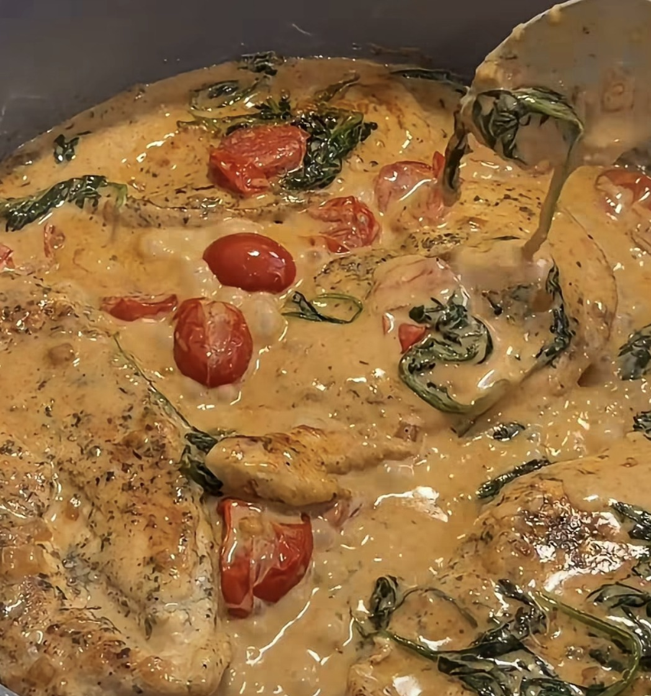
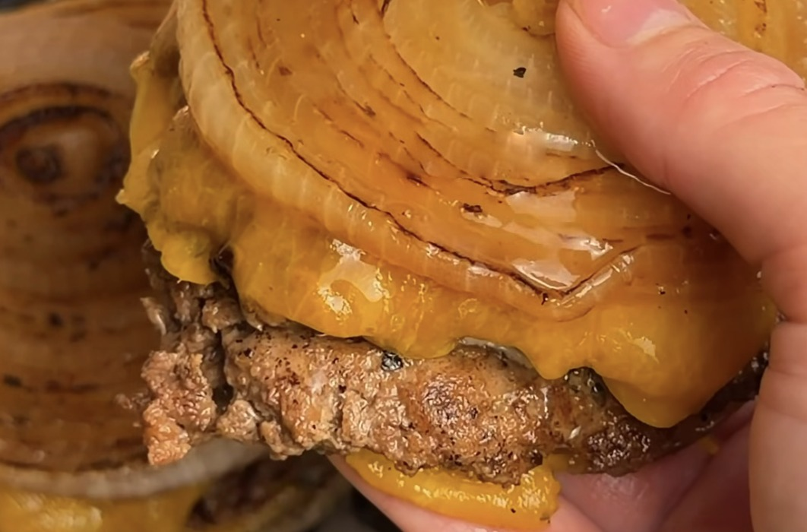
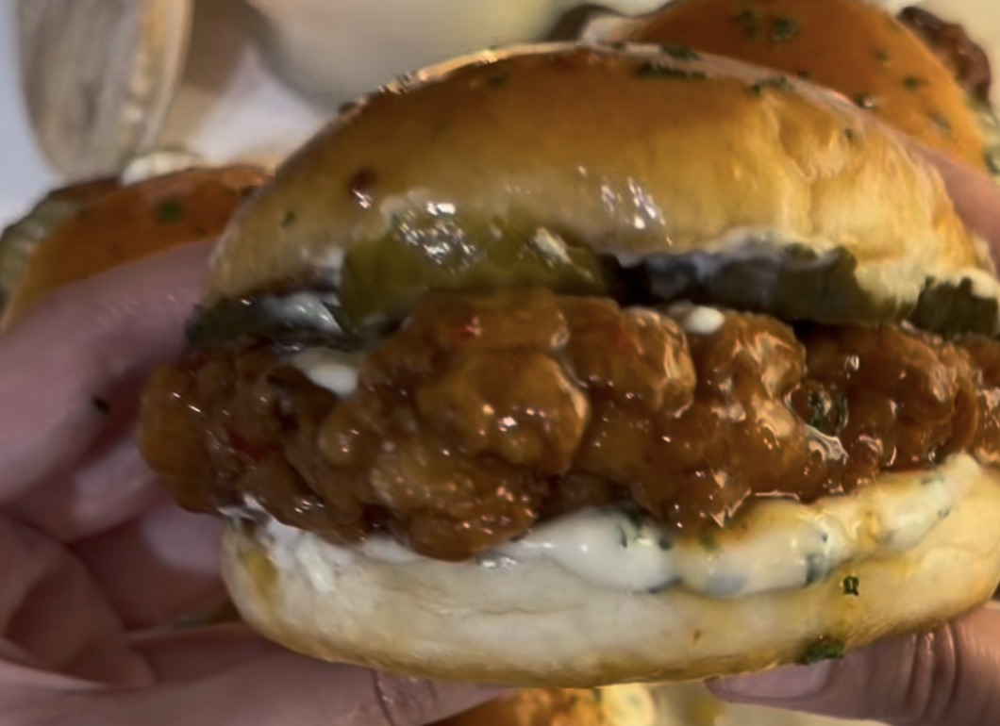
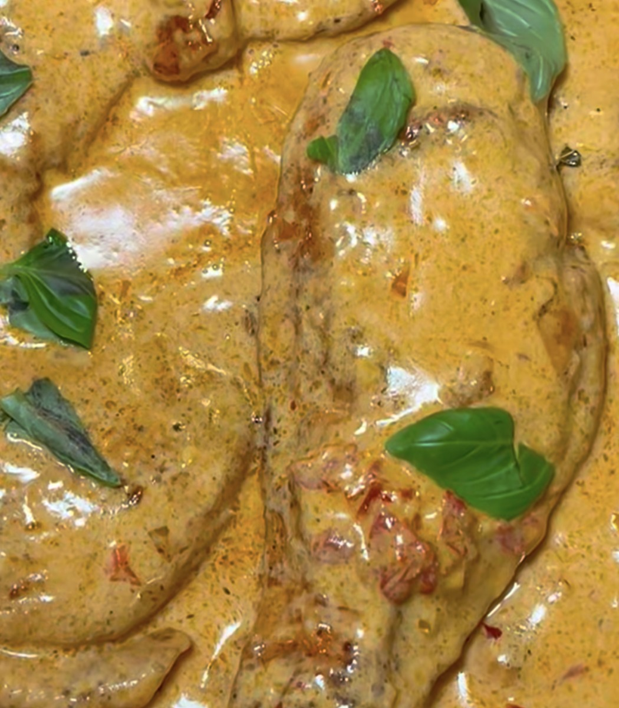
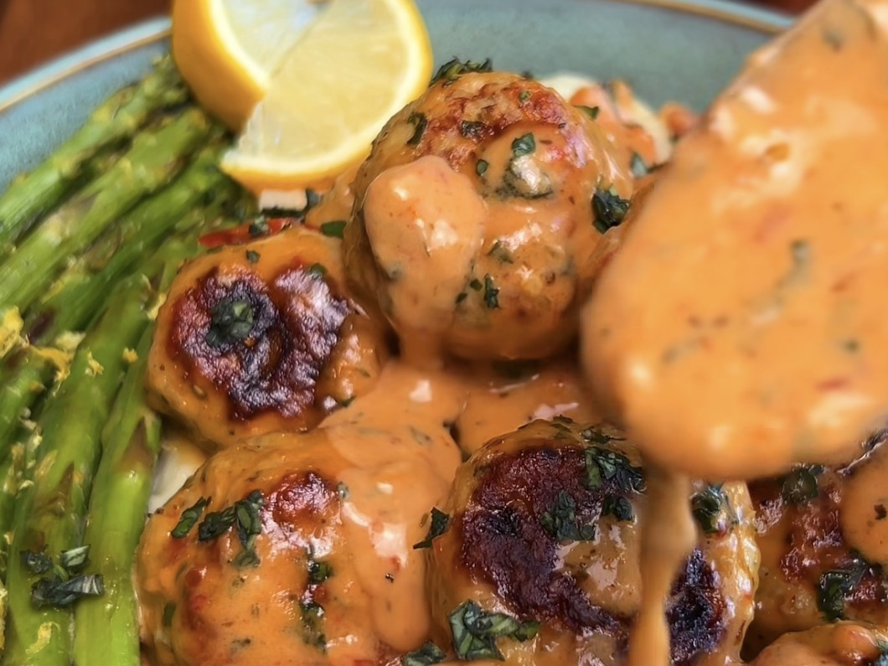
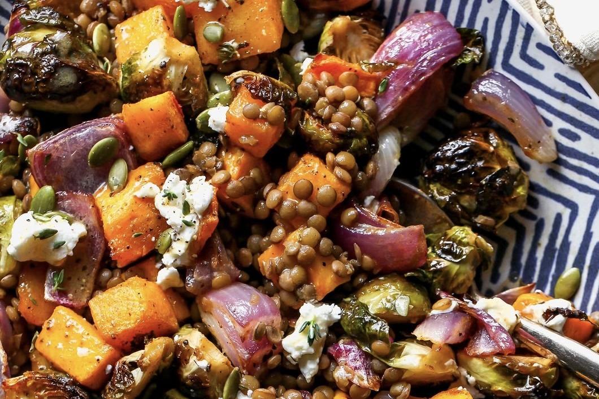
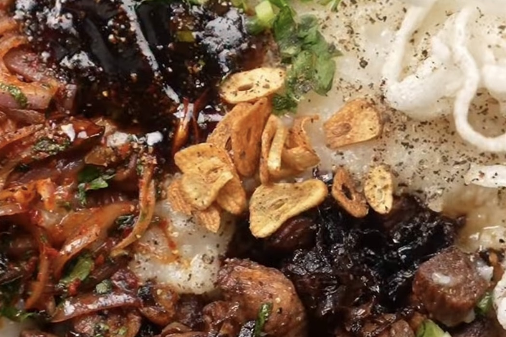

Creamy Coconut Lime Chicken
Golden-seared chicken simmered in a silky coconut sauce, finished with fresh lime and coriander.
chickendinnerchicken-thighs
12 recipes
Golden-seared chicken simmered in a silky coconut sauce, finished with fresh lime and coriander.

Golden chicken in a creamy sauce with tomatoes, spinach and Parmesan.
Air-fried crispy chicken thigh on jasmine rice with a creamy Greek yogurt bang bang sauce, cucumber and scallions.

A lighter take on the viral In-N-Out burger, with lean beef and melted cheddar between two grilled onion slices instead of a bun.

Yogurt-marinated crispy chicken glazed in hot honey butter, with garlic yogurt sauce and pickles.

Golden chicken cutlets in a creamy sun-dried tomato and Parmesan sauce.

Italian seasoned chicken meatballs tossed in a creamy garlic-parmesan sauce with sun-dried tomatoes and fresh basil, served with garlic mashed potatoes and sautéed lemon asparagus.

A one-tray soup of roasted butternut squash, peppers, carrots, tomatoes and garlic, blended smooth and served with chili oil, coconut milk and sourdough.

Roasted Brussels sprouts, butternut squash and red onion with lentils, creamy pockets of goat cheese and a maple-mustard dressing.

Soupy rice from Mizoram, topped with soy sauce chicken, spicy onions, crisp rice noodles and herbs.

Seared chicken cutlets smothered in a mushroom and onion gravy, served with Greek yogurt mash and blistered green beans.
Creamy, cheesy, melt-in-your-mouth chicken in a white sauce. Quick, and perfect for unexpected guests.
No recipe matches that search. Try fewer words.